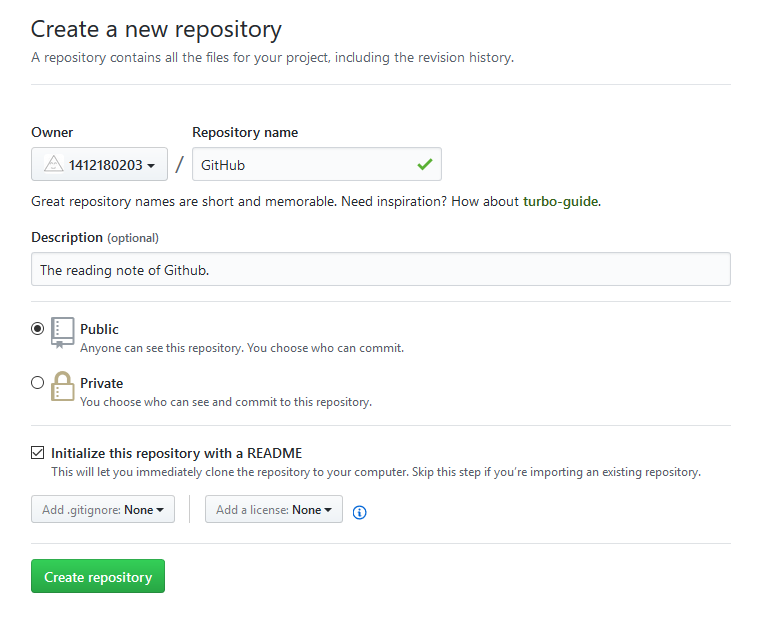

GitHub 上连接已有仓库时的认证，是通过使用了 SSH 的公开密钥认证方式进行的。
运行下面的命令创建 SSH Key。
$ ssh-keygen -t rsa -C "your_email@example.com"
Generating public/private rsa key pair.
Enter file in which to save the key(c/Users/your_user_directory/.ssh/id_rsa): 按回车
Created directory '/c/Users/your_user_directory/.ssh'
Enter passphrase (empty for no passphrase): 输入密码
Enter same passphrase again: 再次输入密码
“your_email@example.com” 的部分请改成您在创建账户时用的邮箱地址，密码需要在认证时输入，请选择复杂度高并且容易记忆的组合。
输入密码后会出现一下结果
Your identification has been saved in /c/Users/your_user_directory/.ssh/id_rsa.
Your public key has been saved in /c/Users/your_user_directory/.ssh/id_rsa.pub.
The key fingerprint is:
fingerprint值 your_email@example.com
The key's randomart image is:
略
id_rsa 文件是私有密钥，id_rsa.pub 是公开密钥。
在 GitHub 中添加公开密钥，今后就可以用私有密钥进行认证了。
点击右上角的设定按钮(Settings)，选择 SSH and GPG keys 菜单后，就会出现如下图的界面。
点击 New SSH key，会出现 Title 和 Key 两个输入框。
在 Title 中输入适当的密钥名称，Key 部分请粘贴 id_rsa.pub 文件里的内容。
id_rsa.pub 的内容可以用如下方法查看
$ cat ~/.ssh/id_rsa.pub
ssh-rsa 公开密钥的内容 your_email@example.com
添加成功之后，创建账户时所用的邮箱会接到一封提示 “公共密钥添加完成” 的邮件。
完成以上设置后，就可以用手中的私人密钥与 GitHub 进行认证和通信了，方法如下
$ ssh -T git@github.com
The authenticity of host 'github.com (192.30.255.113)' can't be established.
RSA key fingerprint is fingerprint值.
Are you sure you want to continue connecting (yes/no)? 输入yes
Warning: Permanently added 'github.com,192.30.255.113' (RSA) to the list of known hosts.
Enter passphrase for key '/c/Users/your_user_directory/.ssh/id_rsa': 输入密码
出现如下结果即为成功。
Hi your_name! You've successfully authenticated, but GitHub does not provide shell access.
实际创建一个公开的仓库，点击右上角工具栏里的 New repository 图标，创建新的仓库。
在 Repository name 栏中输入仓库的名称
Description 栏中可以设置仓库的说明，这一栏不是必须项，可以留空
在这一栏可以选择 Public 或者 Private。这里我们选择 Public，创建公开仓库，仓库内的所有内容都会被公开。
选择 Private 可以创建非公开仓库，用户可以设置访问权限，但这项服务是收费的。
在 Initialize this repository with a README 选项上打勾，随后 GitHub 会自动初始化仓库并设置 README 文件，让用户可以立刻 clone 这个仓库。如果想向 GitHub 添加手中已有的 Git 仓库，建议不要勾选，直接手动 push。
下方左侧的下拉菜单非常方便，通过它可以在初始化时自动生成 .gitignore 文件。这个设定会帮我们把不需要在 Git 仓库中进行版本管 理的文件记录在 .gitignore 文件中，省去了每次根据框架进行设置的 麻烦。下拉菜单中包含了主要的语言及框架，选择今后将要使用的即可。
右侧的下拉菜单可以选择要添加的许可协议文件。如果这个仓库中包含的代码已经确定了许可协议，那么请在这里进行选择。随后将自动 生成包含许可协议内容的 LICENSE 文件，用来表明该仓库内容的许可 协议。
输入选择都完成后，点击 Create repository 按钮，完成仓库的创建。

下面这个 URL 便是刚刚创建的仓库的页面。
https://github.com/1412180203/GitHub
README.md 在初始化时已经生成好了。README.md 文件的内容会自动显示在仓库的首页当中。因此，人们一般会在这个文件中标明本 仓库所包含的软件的概要、使用流程、许可协议等信息。如果使用 Markdown 语法进行描述，还可以添加标记，提高可读性。
在 GitHub 上进行交流时用到的 Issue、评论、 Wiki，都可以用 Markdown 语法表述，从而进行标记。准确地说应该是 GitHub Flavored Markdown（GFM）语法。该语法虽然是 GitHub 在 Markdown 语法基础上扩充而来的，但一般情况下只要按照原本的 Markdown 语法进行描述就可以。
关于 Markdown 语法的解说，网上也有相关资料可查。各位不妨一边参考一边实际尝试。
使用 GitHub 后，很多文档都需要用 Markdown 来书写。也就是说，全世界有大量程序员都在使用 Markdown，因此掌握这种语法已经成为程序员的标准技能之一。请各位也务必学会 Markdown 语法。
接下来我们将尝试在已有仓库中添加代码并加以公开。首先将已有仓库 clone 到身边的开发环境中。
可以先进入想要保存仓库的路径，这样 clone 之后就保存在该路径下了
$ cd E:/SublimeText3/Projects
662059@DESKTOP-2F9F7V0 MINGW64 /e/SublimeText3/Projects
$ gitclone git@github.com:1412180203/GitHub.git
Cloning into 'GitHub'...
Warning: Permanently added the RSA host key for IP address '192.30.255.112' to the list of known hosts.
Enter passphrase for key '/c/Users/662059/.ssh/id_rsa': 输入密码
remote: Counting objects: 3, done.
remote: Total 3 (delta 0), reused 0 (delta 0), pack-reused 0
Receiving objects: 100% (3/3), done.
这里会要求输入 GitHub 上设置的公开密钥的密码。认证成功后，仓库便会被 clone 至仓库名后的目录中。将想要公开的代码提交至这个仓库再 push 到 GitHub 的仓库中，代码便会被公开。
进入仓库，使用如下命令可以查看仓库状态
$ git status
On branch master
Your branch is up-to-date with 'origin/master'.
nothing to commit, working tree clean
将新的文件放到这个仓库下，再查看状态，就会显示为 Untracked，因为新的文件还没添加至 Git 仓库
$ git status
On branch master
Your branch is up-to-date with 'origin/master'.
Untracked files:
(use "git add <file>..." to include in what will be committed)
chapter-01.html
nothing added to commit but untracked files present (use "git add" to track)
将 chapter-01.html 提交至仓库。这样一来，这个文件就进入了版本管理系统的管理之下。今后的更改管理都交由 Git 进行。
$ git add chapter-01.html
662059@DESKTOP-2F9F7V0 MINGW64 /e/SublimeText3/Projects/GitHub (master)
$ git commit -m "Add chapter-01.html"
[master 3516668] Add chapter-01.html
1 file changed, 11 insertions(+)
create mode 100644 chapter-01.html
通过 git add 命令将文件加入暂存区，再通过 git commit 命令提交。
添加成功后，可以通过 git log 命令查看提交日志。
$ git log
commit 3516668b61faed012137d1de93731c9336c416e0
Author: 1412180203 <940710020@qq.com>
Date: Sat May 6 16:16:53 2017 +0800
Add chapter-01.html
略
之后只要执行 push，GitHub 上的仓库就会被更新。
$ git push
Enter passphrase for key '/c/Users/662059/.ssh/id_rsa': 输入密码
Counting objects: 3, done.
Delta compression using up to 4 threads.
Compressing objects: 100% (3/3), done.
Writing objects: 100% (3/3), 481 bytes | 0 bytes/s, done.
Total 3 (delta 0), reused 0 (delta 0)
To github.com:1412180203/GitHub.git
0675c55..3516668 master -> master
这样一来代码就在 GitHub 上公开了。
$ ssh-keygen -t rsa -C "your_email@example.com" //创建 SSH Key
$ cat ~/.ssh/id_rsa.pub //查看公开密钥 id_rsa.pub 的内容
$ ssh -T git@github.com //用私人密钥与 GitHub 进行认证和通信
$ gitclone git@github.com:1412180203/GitHub.git //clone 已有仓库至本地
$ git status //查看仓库状态
$ git add chapter-01.html //向暂存区中添加文件
$ git commit -m "Add chapter-01.html" //保存仓库的历史记录
$ git log //查看提交日志
$ git push //将本地仓库提交到 GitHub 上，来更新内容